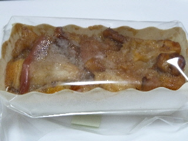
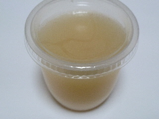

昭和堂のりんごのケーキ
2011/02/06
木綿街道の「もち街」イベントで販売されていたものを買いました。

リンゴのケーキだとアップルパイを想像するんですが、これはパウンドケーキの上にしっとりしたリンゴが乗っていました。ちょっと変わってていいですね。

これはナシのゼリーです。
ナシのコンフィチュールをゼリーにしたような感じがしました。食感が梨らしかったです。
島根県出雲市塩冶町ホックプラザ内
閉店しました。
2011/02/06
木綿街道の「もち街」イベントで販売されていたものを買いました。

リンゴのケーキだとアップルパイを想像するんですが、これはパウンドケーキの上にしっとりしたリンゴが乗っていました。ちょっと変わってていいですね。

これはナシのゼリーです。
ナシのコンフィチュールをゼリーにしたような感じがしました。食感が梨らしかったです。
2008/01/22
工業製品的でない商品で、焼き菓子らしい家庭的な感じのする温かみがある商品でした。
チーズケーキの外側がふんわりと軽い食感で、内側になるほどしっとりとチーズ味が濃くなってました。均一した味の商品って多いですけど、こうゆう商品って色んな味が楽しめていいですね。
ここのチーズケーキはレモン風味が強めで、さっぱりとした味でした。
塩谷町のホックプラザにある、自家製ケーキと喫茶の店「昭和堂」でケーキを買って帰りました。
小さいお店でこじんまりしてるので、ちょっとお店に入りにくいんですが、いかにも自家製って感じがちょっと好きです。
ケーキを注文すると、家庭用の小さい冷蔵庫からケーキが出てくるのがちょっと面白いです。そんなところ他になかなかないですよね。
今日食べたのは抹茶のレアチーズだったんですが、チーズの味もちゃんとしつつ、それでいて抹茶の味もクドクないていどのいいバランスで美味しかったです。
レアチーズの部分の量も、値段の割には多くて満足満足な感じです。